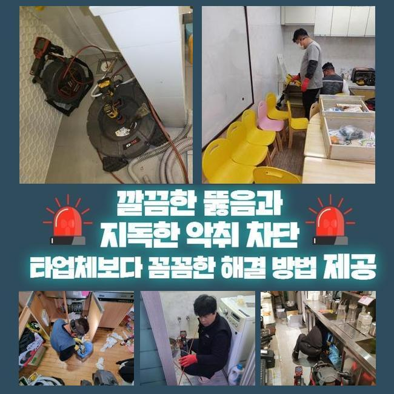
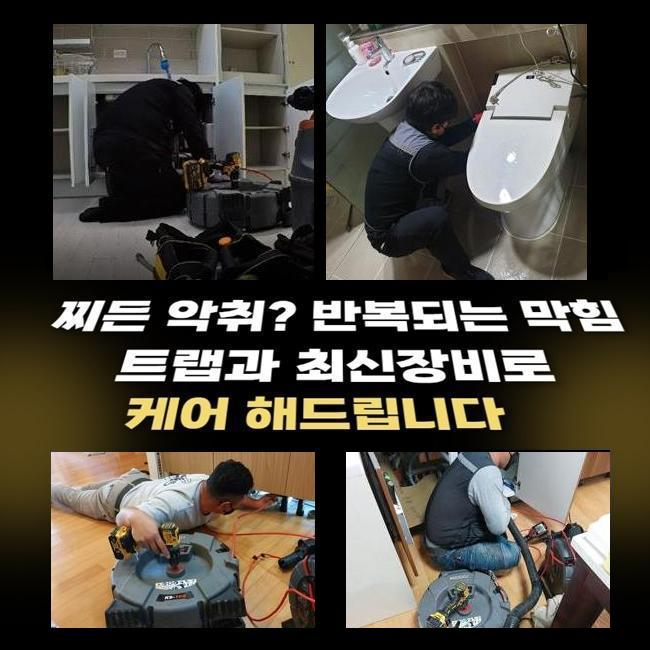
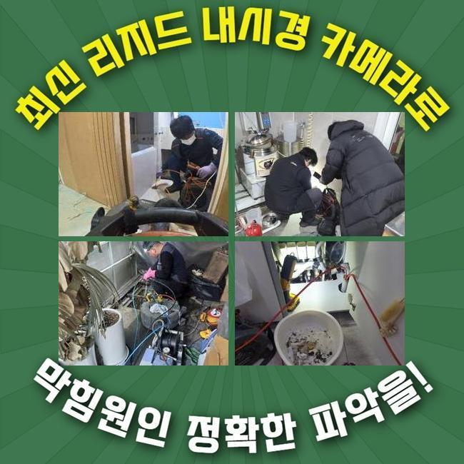
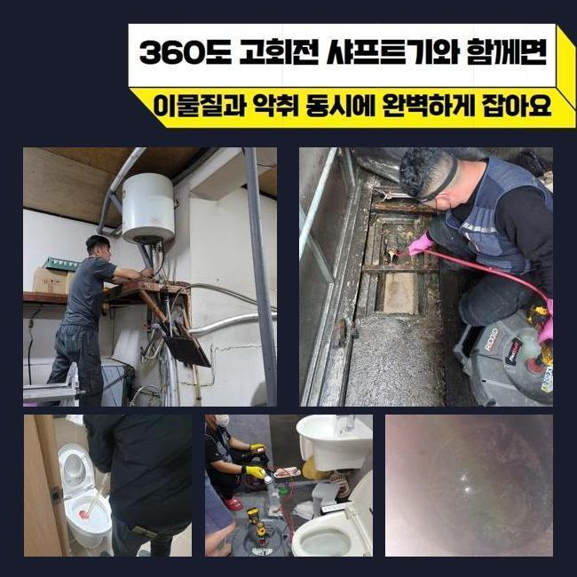
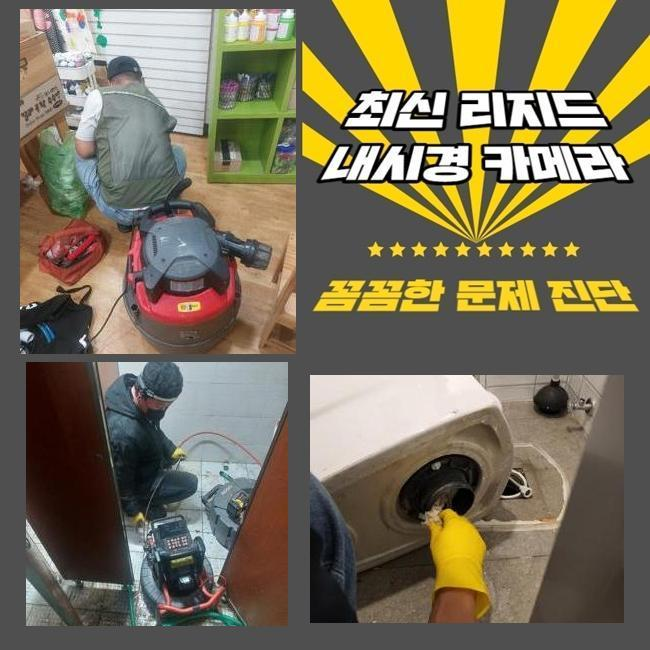
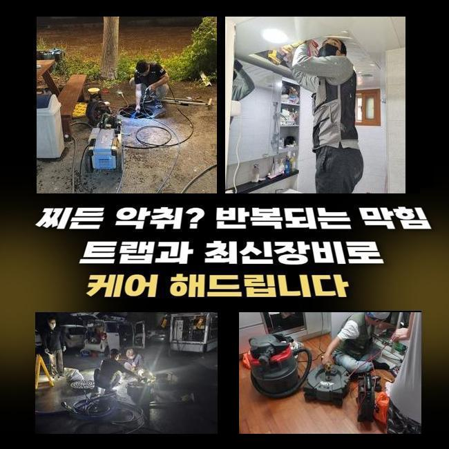

🏠 안현동오수관뚫음 정왕동 하수관고압세척 부속수리
용인 정왕동 변기막힘 전문 시공 후기

📋 작업 개요
- 위치: 용인 정왕동, 정왕동, 용인
- 서비스 유형: 변기막힘, 배관막힘, 역류해결, 뚫는업체, 배관청소, 고압세척
- 작업 일시: 2024. 12. 4. 19:45
- 업체명: 하수구수사대 (010-5615-2118)
🔍 문제 상황
안현동오수관뚫음 정왕동 하수관고압세척 부속수리
모든 건물에 배수로가 실재하며 다양한 환경에서 항상 이용되고 있어요
하지만 여러장소에서 점검미비 오염물 유입 등 다양한 이유로 하수관 막힘을 겪고 있어요
지금과 같은 문제가 발생했을때 진취적으로 주방 싱크 세면기 양변기 등 비정상적 현상이 나타난 부위를 찾아서 해결해야해요
시간이 흘러갈수록 악화된 상황을 유발하기 때문이에요
하지만 특정 작업지의 경우 각 세대의 상황이 아닌 많은 사람이 같이 이용하는 파이프에서 생긴 문제점일수도 있습니다
이건 일어나는 사안으로만은 알아낼 수 없는 원인이기 때문에 장소를 찾아가 다양한 요소를 차근차근 확인해야합니다
최근에 시공을 문의한 곳은 상가매장으로 화장실 내부의 하수가 배수되지 않고 역행한다고 설명하셔서 장애가 생긴 것을 파악했습니다
많은 장소가 있지만 상업시설은 많은 사람이 같이 사용하는 경우가 많기 때문에 어떤 근본 원인으로 나타났는지 서둘러 파악하는 것이 유리합니다
오랜시간 성가신 문제가 해결되지 않는다면 영업하는데에 장애가 발생하기 때문입니다
그렇기 때문에 문제장소로 가서 어느 곳에 문제가 생겼는지 탐색해보았어요
화장실로 들어간 후 하수를 흘려보니 배출이 시원하게 이뤄지지 않고 역류가 되고 있었어요
그리고 불쾌한 냄새마저 풍기고 있어서 문제요인을 빠르게 치울 필요성이 있었습니다
각 세대에서 쓰인 후 더러운 물은 결국 하나의 배관에 모아집니다

🔎 원인 분석
💡 전문가 진단: 정밀 진단 장비를 사용하여 슬러지의 고착 여부를 판명하고 타격/세척 작업을 실시했습니다.
메인 파이프라고 말할 수 있는데 이 배관에서는 각종 문제점들이 흔하게 초래될 수 있습니다
이런 이유로 본인 가게에 전조 증상이 없었어도 막히게 된 상황을 목도하게 되는 것입니다
역류현상으로 인한 악취마저 수반되고 있어서 신속히 기기를 활용해 고쳐 드리기로 결정했어요
일상속에서 자주 사용중인 관로이지만 예상외로 다수의 사람들이 점검을 하지 않고 있습니다
관심 갖지 않아도 전조 증상이 발생하지 않는다는 이유로 대수롭지 않게 여기는 이가 많습니다
반면에 잔여물이 누적되면서 어느 순간 큰 막힘상황이 나타날지 그 누구도 확신할 수 없습니다
결과적으로 정기적으로 세척을 하는게 막힘문제가 나타나는걸 방지할 수 있습니다
덮개부분을 열어보았더니 배관 시작지점부터 여러가지 이물이 넘칠 듯 가득했어요
배출될 통로가 막혀서 이런 문제가 생긴 결과였습니다
그렇기 때문에 불순물을 치우기 위해 석션 장치를 도입하였어요
찌꺼기를 흡수할 수 있는 기구로 차근차근 시작지점에 구멍이 나타났습니다
그 다음에는 막힘요인을 탐지하려고 속안에 내시경기기를 삽입하였습니다
긴 호스가 붙어있는 내시경장비는 내부 깊숙이까지 살펴보기 좋아요
알아보니 대량의 이물질이 시작지점부터 많이 채워져 있던 것처럼 속에도 많이 쌓인 것을 확인했습니다

🔧 작업 과정
내시경 카메라기기로 검토하니 엄청난 양의 오물이 발견되었으며 더 안쪽에는 석회 축적물이 퇴적되어 있었습니다
석회라는 것은 각종 물질이 배수구에서 장시간 쌓이면서 견고하게 퇴적된 것을 말합니다
배수관 막힘의 근원은 침전된 석회였는데 크기가 큰데다가 단단하게 굳어져 있어 빼내기 까다로운 상태였어요
이런식의 견고한 강도의 석회 축적물은 흡입기만으로 없애기 쉽지 않습니다
잘못하면 기기가 고장나버리는 상황이 생길 수도 있게 됩니다
이에 따라 플렉스 샤프트 장치를 사용하여 작은 알갱이로 석회 침전물을 세심하게 깨내기로 선택했어요
샤프트기구의 압력을 사용해 석회 축적물을 파쇄한 후 흡입기구로 제거해주었습니다
게다가 속에도 이물질이 퇴적되어 있어서 온수 고압 물청소를 하기로 확정하였습니다
온수 고압 클리닝은 보통 가정집보다는 관로와 정화탱크를 청소시 주로 이용하는 방식이에요
막힌 정도에 따라 어떠한 기구와 방법을 이용할지 맞춰서 선택해야하기 때문에 문제 요인 조사를 즉시 할 수 있는 곳과 함께 수행하시길 바랍니다
높은 물줄기를 이용해 따뜻한 물을 안쪽 깊은 부분까지 쏴주었습니다
오염물이 흘러나갈 수 있게 세척해나가는 시공입니다
높은 물줄기 활용하다보니 부수적인 깨내는 작업을 안하더라도 청결하게 내측에 잔류하던 오염물을 제거한 것을 관찰할 수 있었습니다
이 작업에 대해 때때로 너무 쉽게 보는 이들도 있어요
고온의 물을 부으면 해결될거라는 분석 후 물호스를 넣어보는 분들도 있어요
하지만 압력을 상황에 맞게 조정하는 건 힘든 일입니다
자칙하면 관로에 파손을 유발할 수도 있어서 작업할 때 정밀하게 세기를 조절 해야만 해요
내시경 카메라기구로 내측의 현황을 확인해가며 면밀하게 세찬 수압의 물을 뿜어내 주었어요
남겨진 조각이 남지않게 체크하며 세척하고 나니 속안에 쌓여 있던 오물과 기름슬러지 석회 퇴적물이 없어진 것을 관찰하였습니다
이 과정의 경우 여건에 따라 작업 시간에 차이가 존재해요
이번 장소에서는 약 30분 남짓의 시간이 필요했으며 오염물이 깨끗이 제거된 걸 파악할 수 있었어요
배수구 내측의 환경이 말끔해졌으니 하수가 제대로 흐르는지 검토하기 위해 물흐름 검사를 실행했습니다
변기내부의 물을 배출하거나 세면대 안에 수도를 사용해 보면서 또 다시 물 고임이 확인되지 않는지 조사해봤습니다


✅ 작업 완료
확인해보니 물이 시원하게 흘러가기 시작했음과 동시에 물 고임도 발생하지 않는 것을 알아차렸습니다
상가 전체의 문제점이 정리되면서 불쾌한 냄새까지 없어졌다는 것을 체크했습니다
일반 가정이라도 종종 생길 수 있는 사례였습니다
배수관은 화장실과 세면볼 그리고 조리실 등 각종 공간에 설치되어 있기 때문이죠
온라인에서 조사 후 스스로 해결해보려는 사람이 있지만 가장 나쁜 경우 망가지는 상황을 초래할 수 있다는 걸 알아차려야 합니다
그렇기 때문에 스스로 분석하고 어떻게 해보려는 것보다는 배관 전용 기구를 구비하고 있는 전문가에게 문의해야 해요




⚠️ 하수구 배관 막힘 예방 및 관리 가이드
- ✅ 머리카락, 비닐, 물티슈 등 물에 분해되지 않는 이물질은 하수구 유입을 절대 금지해 주세요.
- ✅ 하수구 거름망을 씌우고 모여진 이물질은 주기적으로 쓰레기통에 바로 비워주셔야 합니다.
- ✅ 배관 노후가 심할 경우 이물질이 더 쉽게 걸리므로 주기적인 배관 세척(고압세척 등)을 권장합니다.
- ✅ 작업 후 1년 이내 재발 시 하수구수사대에서 무상 A/S 보증 서비스를 제공합니다.
💡 핵심 정리
- 확실한 장비 작업(내시경 점검 및 샤프트 스케일링)으로 원인을 뿌리 뽑습니다.
- 작업 후 1년 이내에 동일한 부위 재발 시 100% 무상 A/S 서비스를 보장합니다.
- 서울 · 경기 · 인천 전 지역에 24시간 언제든 긴급 출동할 수 있도록 항시 대기 중입니다.
❓ 자주 묻는 질문 (FAQ)
🚨 용인 정왕동 변기막힘 문제로 고민이신가요?
정확한 원인 진단과 확실한 시공으로 재발 없는 해결을 약속드립니다.
24시간 긴급 출동 | 서울 · 경기 · 인천 전지역 | 1년 내 재발 시 무상 A/S